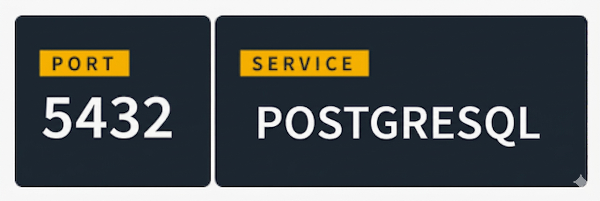
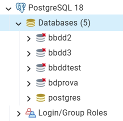

Configuració d'un SGBD
Configuració de l’entorn
En postgresql la configuració es divideix en:
Sistema Operatiu
↓
Variables d'entorn
↓
postgresql.conf
↓
Variables GUC
↓
Sessió
Variables d’entorn del sistema operatiu
Aquestes no són pròpies de PostgreSQL sinó del SO. Les més importants:
- PATH Ruta on està el binari ( única obligatoria )
- PGDATA Directori de dades (servidor)
- PGPORT Port (per defecte 5432) (en client)
- PGHOST Host per defecte (en client)
- PGUSER Usuari per defecte (en client)
- PGPASSWORD Password (en client), no recomanada
** PostgreSQL no necessita que aquestes variables estiguen definides per funcionar. Només faciliten l’ús de les eines.
Inicialment, després de la instal·lació, cap variable està definida (excepte PATH). S'ha de posar manualment els valors si es vol fer ús d'alguna d'elles.
Com es pot saber el valor que deuria tindre PGDATA: connectar a postgres,..
sudo -u postgres psql -c "show data_directory;"
També es pot saber mirant el servei de windows services.msc, dins de propietats del servei de postgres
, en la comanda d'inici del servei, PGDATA és el que posa darrere de -D
I com establir el/s valor/s:
🐧 En Linux
Exemple Linux: export PGDATA=/var/lib/postgresql/16/main export PGPORT=5432
Per fer permanent ( en este usuari ) els valors de PGDATA, etc echo "export PGDATA=/var/lib/postgresql/16/main" >> ~/.bashrc source ~/.bashrc
🪟 En Windows
Pots modificar-les (el PATH) des de Propietats del sistema → Propietats avançades del sistema → Variables d'entorn.
On es troben els binaris (psql)
which psql
/usr/bin/psql
==> /usr/bin
Encara que en este directori es troben els links simbolics al directori real:
/usr/lib/postgresql/16/bin/
En Windows:
C:\Program Files\PostgreSQL\18\bin
El 16 o 18 dels exemples indiquen la versió instal·lada
On es troben els fitxers de configuració
find / -name postgresql.conf 2>/dev/null /etc/postgresql/16/main/postgresql.conf postgres@serverpg:/etc/postgresql/16/main$ ls conf.d environment pg_ctl.conf pg_hba.conf pg_ident.conf postgresql.conf start.conf En Windows: C:\Program Files\PostgreSQL\18\data

Configuració de les connexions
Postgres es un servei (daemon) de base de dades que escolta habitualment al port TCP 5432. Es pot canviar editant el fitxer postgresql.conf, guardant, i reiniciant el servei (daemon)
Sistema Operatiu
↓
Variables d'entorn
↓
postgresql.conf pg_hba
↓
Variables GUC
↓
Sessió
Fitxer -> postgresql.conf
En este fitxer es pot canviar el port on PostgreSQL escolta...
port = 5432 # (change requires restart) max_connections = 100 # (change requires restart)
Fitxer -> pg_hba.conf
Inicialment, no es pot accedir des d'altre equip, i s'ha de configurar, donant expresament permís. Es pot especificar equips concrets, o xarxes concretes, o a tothom 0.0.0.0/0
# Database administrative login by Unix domain socket local all postgres peer # TYPE DATABASE USER ADDRESS METHOD # "local" is for Unix domain socket connections only local all all peer # IPv4 local connections: host all all 127.0.0.1/32 scram-sha-256 # IPv6 local connections: host all all ::1/128 scram-sha-256 # Allow replication connections from localhost, by a user with the # replication privilege. local replication all peer host replication all 127.0.0.1/32 scram-sha-256 host replication all ::1/128 scram-sha-256
Per afegir una xarxa des de la qual poder accedir...en la secció "# IPv4 local connections:"
host all all 192.168.1.0/24 md5 host all all 192.168.1.0/24 scram-sha-256
En PostgreSQL, md5 i scram-sha-256 són mètodes d’autenticació que es configuren al fitxer: pg_hba.conf
MD5: Què és? Mètode d’autenticació basat en hash MD5. PostgreSQL guarda la contrasenya com un hash MD5.
Problemes : MD5 és un algorisme antic (1992). Vulnerable a atacs de col·lisió. Menys segur davant atacs moderns. No protegeix bé contra atacs de força bruta amb hash robat.
SCRAM-SHA-256 :🔐 Què és? SCRAM = Salted Challenge Response Authentication Mechanism. Utilitza SHA-256. Introduït a PostgreSQL 10
Configurar SCRAM correctament al postgresql.conf: password_encryption = scram-sha-256
I després, per regenerar la contrasenya...
ALTER USER usuari WITH PASSWORD 'nova_password';
Mirar com s'està guardant SELECT rolname, rolpassword FROM pg_authid;
Recomanació actual : A PostgreSQL 14, 15, 16… sempre utilitza scram-sha-256 si els clients ho suporten. MD5 només per compatibilitat amb sistemes antics.
Configuració de la instància /cluster
Una instància/cluster de PostgreSQL és el programa en execució del servidor de base de dades juntament amb tot el que necessita per funcionar. No és només la base de dades, És tot el sistema que gestiona les bases de dades
Una instància de PostgreSQL inclou:
- El procés del servidor (postgres)
- La memòria que utilitza
- Els fitxers al disc (on es guarden les dades)
- La configuració (ports, usuaris, etc.)
- El conjunt de bases de dades
En un mateix ordinador pots tenir 1 instància (el més habitual) o Diverses instàncies (per separar entorns: proves, producció…). Cada instància funciona de manera independent.
🔌 Què és una sessió en PostgreSQL?
Una sessió és la connexió activa entre un client (usuari o aplicació) i el servidor de base de dades. Comença quan et connectes, Acaba quan et desconnectes
Quan obris una sessió, Et connectes amb un usuari i Treballes sobre una base de dades concreta.
Pots executar: consultes (SELECT), insercions (INSERT), actualitzacions (UPDATE), esborrats (DELETE), pots fer transaccions, etc..
🔄 Cada connexió d'un usuari = una sessió. 1 usuari connectat → 1 sessió, 10 usuaris connectats → 10 sessions. 1 usuari connectat 5 vegades → 5 sessions.: PostgreSQL gestiona moltes sessions alhora.
✔ Cada sessió té: El seu estat, Les seves variables, Les seves transaccions.
Les sessions són independents entre si, Però poden interactuar (bloquejos, concurrència, etc.)
Tornem a la instància....
Fitxer: postgresql.conf
El fitxer postgresql.conf és el fitxer principal de configuració d’una instància de PostgreSQL. Serveix per dir-li al servidor com ha de funcionar
- És el fitxer principal. Defineix:
- Memòria (shared_buffers, work_mem, maintenance_work_mem)
- Connexions (max_connections)
- WAL (wal_buffers, checkpoint_timeout)
- Logging (log_destination, log_min_duration_statement)
- Planner (random_page_cost, effective_cache_size)
exemple: shared_buffers = 1GB work_mem = 16MB max_connections = 200
Fitxer: pg_ident.conf
usuaris del sistema → usuaris PostgreSQL.
Variables del sistema (GUC - Grand Unified Configuration)
Sistema Operatiu
↓
Variables d'entorn
↓
postgresql.conf pg_hba
↓
Variables GUC
↓
Sessió
PostgreSQL té centenars de variables internes configurables (Aquestes no són variables d’entorn, sinó paràmetres de configuració del servidor.). Pots veure-les amb:
SHOW ALL;
O una concreta: SHOW work_mem;
O via vista del sistema SELECT name, setting FROM pg_settings; -- En postgres, per vore les columnes d'una taula es fa: \d nom_taula
- Aquestes variables poden ser:
- Globals (configurades a postgresql.conf)
- Per base de dades
- Per usuari
- Per sessió
Exemple: canviar variable només per Sessió SET work_mem = '64MB'; Només afecta la connexió actual. S'aplica immediatament.
En este cas, quan em desconnecte i després em torne a connectar, el valor "64MB" no estarà fixat.
Per fer que el canvi siga per usuari (persistent) en lloc de només per sessió, has d’utilitzar:
ALTER ROLE nom_usuari SET work_mem = '64MB';
S'aplica quan es torne a connectar l'usuari.
El canvi es guarda en pg_db_role_setting
- Cada vegada que l’usuari joan es connecte → tindrà work_mem = 64MB
- És persistent (no es perd en tancar sessió)
- No afecta altres usuaris
Un altre nivell més alt de canvi és el de BBDD
ALTER DATABASE nom_bbdd SET work_mem = '64MB';
A partir d'este moment, tindrà efecte en noves sessions que es connecten a eixa base de dades.
El canvi es guarda en pg_db_role_setting
- Això fa que:
- Qualsevol usuari que es connecte a la base de dades vendes → tindrà work_mem = 64MB
- És persistent
- Només afecta eixa base de dades
El valor s’aplica en iniciar la sessió. Si ja estàs connectat → has de reconnectar per veure el canvi
I el nivell més alt, per tot el cluster
ALTER SYSTEM SET work_mem = '128MB'; i després SELECT pg_reload_conf(); per aplicar canvis. si no fas pg_reload_conf() ni reinicies, ... ni les sessions noves aplicaran el canvi
ALTER SYSTEM defineix el valor global per defecte per a tota la instància, però pot ser sobrescrit per configuracions més específiques (usuari, base de dades o sessió).
I al mateix nivell que ALTER SYSTEM, seria modificar el fitxer postgresql.conf
PostgreSQL té una jerarquia de prioritat
SET (sessió) ALTER ROLE (usuari) ALTER DATABASE (bbdd) ALTER SYSTEM / postgresql.auto.conf postgresql.conf (global) hardcoded
Quan es fa "ALTER SYSTEM SET work_mem = '128MB';", PostgreSQL no modifica directament postgresql.conf El que fa és escriure el canvi a un fitxer separat:
/var/lib/postgresql/16/main/postgresql.auto.conf
Aquest fitxer és llegit després de postgresql.conf quan el servidor arrenca o fas pg_reload_conf() Per això, els canvis són persistents, però no toques manualment postgresql.conf
A PostgreSQL, molts paràmetres tenen un valor per defecte que està hardcoded dins del codi de PostgreSQL,
es defineix en el moment de compilació / instal·lació, no està guardat en cap fitxer ni taula.
PostgreSQL els carrega automàticament en iniciar el servidor.
Són els que source = 'default'
Com saber quins són: SELECT name, setting FROM pg_settings WHERE source = 'default';
# Com saber de quin tipus és cada paràmetre: SELECT name, setting, context, vartype, source FROM pg_settings ORDER BY name;
La columna context et diu quan i com es pot modificar el paràmetre (variable GUC).
context Significat -------------------------------------------- internal Només intern, no modificable postmaster Requereix reinici del servidor sighup Requereix reload (pg_reload_conf()) superuser Només superusuari user Qualsevol usuari pot canviar-lo per sessió backend Es pot canviar en iniciar sessió
Com saber quines variables pot canviar un usuari dins de la seua sessió ?
SELECT name FROM pg_settings WHERE context = 'user';
Saber d’on ve el valor (columna source)
SELECT name, source FROM pg_settings WHERE name = 'work_mem';
valor de source Significat -------------------------------------------- default Valor per defecte configuration file postgresql.conf override postgresql.auto.conf environment Variable d’entorn session SET en sessió database Definida per base de dades user Definida per usuari
Variables per usuari o per base de dades
PostgreSQL permet configurar paràmetres així:
🔹 Per usuari
ALTER ROLE usuari SET work_mem = '32MB';
🔹 Per base de dades
ALTER DATABASE basedades SET work_mem = '64MB';
🔹 Global (per defecte)
ALTER SYSTEM SET work_mem = '128MB';
Això escriu al fitxer: postgresql.auto.conf
❗ No aplica fins que fas: SELECT pg_reload_conf(); ( o reinici)
Configuració de memòria
Reinici de la instància
Alguns canvis requereixen recarregar la configuració (en calent), o reiniciar la instància
🔁 pg_reload_conf() → recarrega configuració 🔴 Reiniciar servei → per canvis estructurals (shared_buffers)
Exercici: Quantes variables té actives la teua instal·lació?
Exercici: Quanta memoria de treball té una sessió de la teua instal·lació?
Exercici: Qin valor té el "log_destination" de la teua instal·lació?
Comptes d’administració
👤 Comptes d'administració predeterminats
Quan es crea una base de dades postgres es genera automaticament:
A nivell de cluster
- 🔹 postgres - Usuari administrador per defecte (SUPERUSER)
- És el superusuari de la base de dades.
- Té permisos totals (SUPERUSER)
- Pot crear bases de dades
- Pot crear rols/usuaris
- Pot modificar qualsevol objecte
- Pot canviar configuració
- Aquest usuari es crea durant la inicialització amb initdb.
⚠️ Important: Normalment coincideix amb l’usuari del sistema operatiu postgres És el compte equivalent a “SYS” a Oracle
Altres comptes? : No es creen més usuaris per defecte. No existeixen comptes com: root admin system guest...
A nivell de sistema operatiu, quan instal·les PostgreSQL també es crea:
🔹 Usuari del SO: postgres- Aquest usuari:
- Executa el servei PostgreSQL
- És propietari del directori PGDATA
- S’utilitza per administrar el servidor

📍 Ubicació dels comptes
Tots els usuaris i rols es troben fora i a la mateixa altura que les bases de dades. Els usuaris i les bases de dades depenen del cluster. Així, un mateix usuari pot connectar (si te permís) a qualsevol BBDD del cluster.
Canvi de contrasenya
🔑 Canvi de contrasenya de l'usuari postgres
🟡 Important: Escull sempre una contrasenya segura. Després de canviar-la, actualitza les connexions d’aplicacions que utilitzen aquest usuari.
1️⃣ Linux / Mac
- Accedir a l’usuari
postgresdel sistema: - Entrar a la consola de PostgreSQL:
- Canviar la contrasenya:
- Sortir de la consola:
sudo -i -u postgrespsqlALTER USER postgres WITH PASSWORD 'NovaContrasenyaSegura';\q2️⃣ Linux / Mac (comanda directa sense entrar a psql)
sudo -u postgres psql -c "ALTER USER postgres WITH PASSWORD 'NovaContrasenyaSegura';"3️⃣ Windows
- Obrir Command Prompt amb permisos d’administrador.
- Accedir al directori bin de PostgreSQL (ajusta segons la teva instal·lació):
- Connectar a PostgreSQL:
- Canviar la contrasenya:
- Eixir de la consola:
cd "C:\Program Files\PostgreSQL\16\bin"psql -U postgresALTER USER postgres WITH PASSWORD 'NovaContrasenyaSegura';\q⚠️ Notes addicionals:
- Si tens
pg_hba.confamb autenticaciópeer, només l’usuari del SOpostgrespot connectar-se sense contrasenya. - Canviar la contrasenya no modifica el mètode d’autenticació (
peer,md5,scram-sha-256).
En altres SGBDs, l'usuari administrador varia...
| Sistema | Usuari administrador | Descripció breu |
|---|---|---|
| Oracle | SYS |
Superusuari amb accés al diccionari de dades. |
| MySQL | root |
Superusuari amb tots els privilegis sobre el servidor. |
| PostgreSQL | postgres |
Superusuari creat per defecte durant la instal·lació. |
Arrancada i parada de la instància de postgresql
Arrancada del servidor
🐧 En Linux (systemd – el més habitual)
sudo systemctl start postgresqlO si hi ha versions específiques:
sudo systemctl start postgresql-16Comprovar estat:
sudo systemctl status postgresqlManualment amb pg_ctl
pg_ctl -D /ruta/al/PGDATA startExemple:
pg_ctl -D /var/lib/postgresql/16/main start🪟 En Windows
PostgreSQL s’instal·la com a servei:
net start postgresql-x64-16O des de:
Services → PostgreSQL → StartParada del servidor
En PostgreSQL no es pot parar el clúster directament des de dins de psql amb una comanda SQL estàndard. psql és només un client per executar consultes SQL, i parar el servidor és una operació d’administració del sistema, no de SQL.
En Linux (systemd)
És una ordre a nivell de sistema, no específica de PostgreSQL. Internament, systemd acabarà cridant alguna cosa similar a pg_ctl, però segons com estiga definit el servei. El comportament (smart, fast, immediate) depèn del fitxer de configuració del servei (postgresql.service).
sudo systemctl stop postgresqlés més genèric i automatitzat. Nivell Sistema Operatiu
Amb pg_ctl
pg_ctl, una eina pròpia de PostgreSQL. Atura un cluster concret (el que apunta PGDATA). Tens control directe sobre com es fa l’aturada amb -m .Nivell de cluster. Gestió directa de postgres
pg_ctl -D /ruta/al/PGDATA stop⚠️ Modes de parada (important)
PostgreSQL permet 3 modes de shutdown:
🟢 Smart (per defecte)
Espera que acaben les connexions actives.
pg_ctl stop -m smart🟡 Fast (més habitual en producció)
Cancela transaccions i fa checkpoint.
pg_ctl stop -m fast🔴 Immediate (forçat)
No fa checkpoint net → recuperació al proper inici.
pg_ctl stop -m immediate👉 Normalment s’utilitza fast.
Reinici
sudo systemctl restart postgresqlO:
pg_ctl restart -D /ruta/PGDATAQuè passa internament quan arranca?
Quan arranca:
- Es crea el procés principal (postmaster)
- Es crea shared memory
- S’inicien processos background:
- Checkpointer
- WAL writer
- Autovacuum
- Background writer
- Es posa en escolta al port (5432 per defecte)
Com saber si està actiu?
Des de client:
psql -U postgresO des de Sistema Operariu:
pg_isreadyConfiguració de l’emmagatzematge
Arquitectura simplificada d’emmagatzematge en postgresql
Disc ├── PGDATA │ ├── base/ │ ├── global/ │ ├── pg_wal/ │ ├── pg_tblspc/ │ └── postgresql.conf
La configuració de l’emmagatzematge a PostgreSQL fa referència a com i on es guarden físicament les dades, WAL, índexs i fitxers interns dins del sistema.
📁 Directori de dades (PGDATA)
És el directori principal on PostgreSQL guarda:
- Bases de dades
- Taules
- Índexs
- WAL
- Fitxers de configuració
Exemple típic en Linux:
/var/lib/postgresql/16/mainAquest directori es defineix amb:
PGDATAO en iniciar amb:
pg_ctl -D /ruta/PGDATA startEstructura interna del directori
Dins de PGDATA trobem:
| Carpeta | Funció |
|---|---|
| base/ | Fitxers físics de les bases de dades |
| global/ | Objectes globals (rols, tablespaces) |
| pg_wal/ | Fitxers WAL (Write Ahead Log) |
| pg_tblspc/ | Enllaços simbòlics a tablespaces |
| pg_stat/ | Estadístiques |
Emmagatzematge físic de les taules
Cada taula en PostgreSQL és:
- Un o diversos fitxers físics
- Identificats per OID
- Emmagatzemats dins
base/<OID_database>/
⚠️ No es guarda amb el nom de la taula, sinó amb un identificador intern.
PostgreSQL guarda les dades així:
/var/lib/postgresql/16/main/base/ ├── 16384/ │ ├── 1259 │ ├── 1247 │ └── ...
- Des del sistema operatiu:
- ❌ No pots saber fàcilment quina taula és cada fitxer
- ❌ No pots llegir les dades (estan en format intern binari)
- ❌❌ Manipular-los directament pot corrompre la base de dades
Tablespaces (molt important)
Permeten distribuir dades en diferents discos.
Exemple:
CREATE TABLESPACE dades_fast
LOCATION '/mnt/ssd_postgres';Després pots crear una taula en aquest espai:
CREATE TABLE clients (
id serial,
nom text
) TABLESPACE dades_fast;Útil per:
- Separar dades i WAL
- Utilitzar SSD per índexs
- Millorar rendiment I/O
Paràmetres importants a postgresql.conf:
wal_level = replica
checkpoint_timeout = 5min
max_wal_size = 1GBParàmetres importants d’I/O i emmagatzematge
Al postgresql.conf:
Checkpoints
checkpoint_timeout
max_wal_sizeSincronització
synchronous_commit
fsync⚠️ fsync=off millora rendiment però és perillós en producció.
Diccionari de dades
📘 Què és el diccionari de dades?
El diccionari de dades a PostgreSQL és el conjunt de taules i vistes del sistema que emmagatzemen tota la informació sobre l’estructura de la base de dades.
📚 El diccionari de dades conté metadades (dades sobre les dades).
Què guarda el diccionari de dades?
Conté informació sobre:
- Bases de dades
- Taules
- Columnes
- Índexs
- Constraints
- Usuaris i rols
- Permisos
- Tablespaces
- Funcions
- Vistes
- Extensions
🗂 On es troba?
En PostgreSQL, el “diccionari de dades” no és un únic objecte centralitzat, sinó que està distribuït en diferents catàlegs del sistema.
El diccionari de dades està format principalment per:
Esquema pg_catalog
Cada base de dades té els seus propis catàlegs del sistema (pg_catalog)
És l’esquema intern del sistema.
Conté taules com:
| Taula | Funció |
|---|---|
| pg_class | Taules i índexs |
| pg_attribute | Columnes |
| pg_type | Tipus de dades |
Exemple:
SELECT * FROM pg_catalog.pg_tables;A nivell de instància (cluster) hi ha alguns catàlegs globals (emmagatzemats a global/), com:
rols/usuaris (pg_authid), bases de dades (pg_database)
👉 Aquests són compartits per totes les bases de dades.
| Taula | Funció |
|---|---|
| pg_roles | Rols/usuaris |
| pg_authid | Autenticació |
| pg_database | Bases de dades |
| pg_tablespace | Tablespaces |
Information Schema
PostgreSQL també implementa:
information_schemaÉs estàndard SQL (portable entre SGBD).
Exemple:
SELECT table_name
FROM information_schema.tables
WHERE table_schema = 'public';🔎 Exemples pràctics
🔹 Llistar taules
SELECT tablename
FROM pg_tables
WHERE schemaname = 'public';🔹 Veure columnes d’una taula
SELECT column_name, data_type
FROM information_schema.columns
WHERE table_name = 'clients';🔹 Veure índexs
SELECT indexname
FROM pg_indexes
WHERE tablename = 'clients';🏗 Diferència entre pg_catalog i information_schema
| pg_catalog | information_schema |
|---|---|
| Intern PostgreSQL | Estàndard SQL |
| Més complet | Més portable |
| Pot canviar entre versions | Més estable |
🔐 També guarda informació de seguretat
Exemple:
SELECT * FROM pg_roles;Mostra:
- Qui és superusuari
- Qui pot crear BD
- Qui pot crear rols
🧾 Quadern de bitàcola (Redo Log Files)
en postgresql s'anomena WALWAL (Write Ahead Log)
El WAL (Write Ahead Log) a PostgreSQL és el mecanisme que garanteix la seguretat i consistència de les dades. WAL significa literalment: Write Ahead Log = Escriure primer al log abans que a la taula
Ubicat a: PGDATA/pg_wal/
És essencial per:
- Recuperació en cas de fallada
- Replicació en temps real
- Propietats ACID
Idea clau: Abans que PostgreSQL modifique físicament una taula al disc: Escriu el canvi al WAL, Després aplica el canvi a la taula
Això permet recuperar la base de dades si hi ha un error o tall elèctric.
Com funciona?
Per una operació com : UPDATE comptes SET saldo = saldo - 100 WHERE id = 1;
- El procés és:
- Es registra el canvi al WAL
- El WAL es guarda a disc
- Es confirma la transacció (COMMIT)
- Més tard s’actualitza la taula real
Si el sistema falla abans del pas 4 → PostgreSQL pot reconstruir el canvi utilitzant el WAL.
🔥 Recuperació després d’un crash
- Quan PostgreSQL arrenca després d’un error:
- Llegeix el WAL
- Reprodueix les operacions que no s’havien escrit completament a disc
- Deixa la base de dades en estat consistent
Això s’anomena: Crash Recovery
LOGS
Els logs a PostgreSQL són fitxers de registre que documenten l’activitat del servidor (errors, connexions, consultes i esdeveniments interns) i serveixen per a diagnòstic, auditoria i anàlisi del rendiment
📁 Ubicació dels fitxers
Per defecte, PostgreSQL escriu missatges al stderr, no a fitxers. Per generar logs en fitxers, cal activar el logging_collector i definir un directori amb log_directory, i log_filename:
# Fitxer postgresql.conf (normalment a /etc/postgresql/16/main ) logging_collector = on # habilita la recollida de logs a fitxers log_directory = 'pg_log' # nom del directori (pot ser relatiu a $PGDATA) log_filename = 'postgresql-%Y-%m-%d_%H%M%S.log' # nom dels fitxers
En posgresql normalment es generen fitxers separats segons la configuració de log_filename. Això fa que cada reinici del servidor o cada interval de temps (segons configuració) genere un fitxer nou.
Per defecte:
$PGDATA/pg_log/ (Linux)
%PGDATA%\pg_log\ (Windows)PostgreSQL pot rotar els logs automàticament amb
log_truncate_on_rotation = on # Esborra el fitxer antic si existeix log_rotation_age = 1d # Rotar cada 1 dia log_rotation_size = 10MB # Rotar quan el fitxer arriba a 10 MB
Això evita fitxers enormes i permet tenir logs manejables. Si utilitzes log_filename = 'postgresql-%Y-%m-%d_%H%M%S.log', cada rotació crearà fitxer nou automàticament.
🔍 Com consultar els logs
Linux
# Logs recents en temps real
tail -f $PGDATA/pg_log/postgresql-2026-02-19_120000.log
# Buscar per error concret
grep "ERROR" $PGDATA/pg_log/postgresql-2026-02-19_120000.log
# Buscar per una data específica
grep "2026-02-19" $PGDATA/pg_log/postgresql-2026-02-19_*.log🪟 Windows
Obrir els fitxers .log amb Notepad o Notepad++ i filtrar per errors o sentències.
🛠 Configuració clau a postgresql.conf
# Habilitar recol·lecció de logs
logging_collector = on
# Destinació del log
log_destination = 'stderr'
# Carpeta i nom del fitxer
log_directory = 'pg_log'
log_filename = 'postgresql-%Y-%m-%d_%H%M%S.log'
# Registrar consultes SQL llargues
log_min_duration_statement = 1000 # ms
# Registrar connexions i desconnexions
log_connections = on
log_disconnections = on
# Nivell de gravetat mínim
log_min_messages = warning📋 Tipus de logs a PostgreSQL
Dins del/s fitxers de logs, es poden trobar el events:
🟢 Server log (equivalent a Alert log)
exemple LOG: database system is ready to accept connections LOG: database system is shut down
Exemple Errors: ERROR: relation "clients" does not exist STATEMENT: SELECT * FROM clients;
🟡 CSV log / File log
Logs en format CSV, útils per anàlisi automàtica o informes. Extensió: .csv
log_destination = 'csvlog'
Si s'activa, l'estructura d'emmagatzemament serà tipus .csv, per fer anàlisi posterior
🔵 Log de connexions
Registra intents de connexió, autenticació fallida o correcta, i desconnexions. Configurat amb log_connections i log_disconnections.
Se s'activa:
log_connections = on log_disconnections = on
Es podrà vore en els events: LOG: connection authorized: user=postgres database=testdb LOG: disconnection: session time: 0:01:23
🟣 Log de consultes
Registra sentències SQL, útil per a depuració i tuning. Configurat amb log_statement i log_min_duration_statement.
Se s'activa:
log_statement = 'all'
Es podrà vore en els events TOTES les consultes: Millor pràctica: log_min_duration_statement = 1000 Sols consultes que 'duren' molt...
🟠 Log de backups
Si s’utilitza pg_dump, pg_restore o pg_basebackup, els logs de les operacions de backup poden ser redirigits a fitxers específics.
Des de client que llança el backup pg_dump -U postgres -d basedades > backup.sql 2> backup.log o DATA=$(date +%Y-%m-%d_%H%M) pg_dump -U postgres basedades > /backups/basedades_$DATA.sql 2> /backups/basedades_$DATA.log
Des de servidor log_checkpoints = on log_connections = on log_replication_commands = on ==> Això farà que el server log mostre informació quan es fa un pg_basebackup.
⚪ Log d’instal·lació o updates
Durant la instal·lació del servidor PostgreSQL o d’extensions, es generen logs del sistema operatiu o scripts d’instal·lació.
Si s'instal·la amb sudo apt install postgresql-16, els logs no es configuren a PostgreSQL, sinó que els genera APT i dpkg.
📁 On es troben? /var/log/apt/history.log /var/log/apt/term.log També: /var/log/dpkg.log
Configuració: No es configuren des de PostgreSQL. Es configuren des de:
/etc/apt/apt.conf.d/ *Configuració de rsyslog * Rotació amb logrotate Exemple per vore instal·lació de PostgreSQL: grep postgresql /var/log/apt/history.log
Logs del servei de postgresql , una vegada en funcionament
Per veure logs: journalctl -u postgresql O en temps real: journalctl -u postgresql -f Aquests logs depenen de: /etc/systemd/journald.conf
🔍 Exemple d’Alert Log real (arrencada i errors)
2026-02-19 12:00:01 UTC [12345] LOG: database system was shut down at 2026-02-19 11:59:50 UTC
2026-02-19 12:00:01 UTC [12345] LOG: MultiXact member wraparound protections are now enabled
2026-02-19 12:00:01 UTC [12345] LOG: database system is ready to accept connections
2026-02-19 12:05:02 UTC [12347] ERROR: relation "clients" does not exist at character 15
2026-02-19 12:05:02 UTC [12347] STATEMENT: SELECT * FROM clients;⚙️ Configuració recomanada a postgresql.conf
logging_collector = on
log_destination = 'stderr'
log_directory = 'pg_log'
log_filename = 'postgresql-%Y-%m-%d_%H%M%S.log'
log_connections = on
log_disconnections = on
log_statement = 'all'
log_min_duration_statement = 1000
log_min_messages = warning🧪 Pràctica: Localitza els fitxers de log, obre’ls i filtra per errors o arrencades de la base de dades. Observa com PostgreSQL registra diferents esdeveniments com arrencada, errors SQL i connexions.